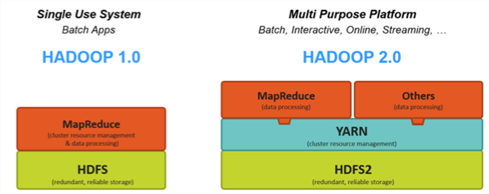

Big Data Platforms, Hadoop and beyond
2020-11-15
A complex ecosystem

Numerous Apache Software Foundation projects:
- Each covering a specific functionnality
- With their own developer community
- And their own development cycle
Hadoop distributions!
- Cloudera/Horthonworks (2018 fusion)
- MapR
- Others smaller
HDFS and MapReduce principles
Two main components of Hadoop
- Distributed Software Defined Storage: HDFS (Hadoop Distributed File
System)

- Distributed Data Processing: MapReduce

Principles
- Split and store data on a cluster of servers (with local storage)
- Process data localy (on the server which owns it)
- Horizontal scalability: add or remove machines, on the fly, for compute or storage
- Fault tolerant
Quizz
What are the two building blocks of Hadoop ecosystem (multiple choices)?
- Answer A: Oozie
- Answer B: HDFS
- Answer C: Map Reduce
- Answer D: Servers
Answer link Key: gf
HDFS Architecture

Quizz
What means HDFS?
- Answer A: Hadoop Distributed Functional Services
- Answer B: Hadoop Delayed File System
- Answer C: Hadoop Distributed File System
- Answer D: Hadoop Delayed Functional Services
Answer link Key: td
YaRN
- Yet Another Resource Negociator…
- Introduced in Hadoop v2
- Separation between
- Resources scheduling and cluster state
- Job execution and distribution
 
Quizz
What is the magical hidden step of distributed Map Reduce?
- Answer A: Map
- Answer B: Reduce
- Answer C: Shuffle
- Answer D: Split
Answer link Key: ep
Quizz
What is the goal of a Datalake?
- Answer A: Host structured and filtered Data
- Answer B: Host any kind of Data, at any stages of processing
- Answer C: Standardizing Data structure
Answer link Key: nv
Some tools

Plenty others from Apache or in Python ecosystem.
Architecture, big picture

Several things: Login nodes, Admin/Scheduler nodes, Compute resources, Parallel FS, RMDA Network
HPC platform, story and use case
HPC = High Performance Computing
- Firsts HPC platforms built in the 1960s
- Mainly compute bounds algorithms
- At first for Weather forcasting and Aerodynamic research
- Structure modeling and fluid mecanics by discretization
- Needs (needed?) high performance hardware (network, CPUs, storage)
- Compute and storage are separated
- Uses a resource scheduler

Quizz
How Big Data processing differs from classical HPC (multiple choices)?
- Answer A: It is compute bound
- Answer B: It is data bound
- Answer C: It uses specialized hardware
- Answer D: It uses commodity hardware
- Answer E: It is fault tolerant
Answer link Key: ex
Quizz
What technologies are replacing Hadoop ecosystem (multiple choices)?
- Answer A: Map Reduce
- Answer B: MPI (Message Passing Interface)
- Answer C: Spark
- Answer D: Cloud computing and object storage
Answer link Key: pc